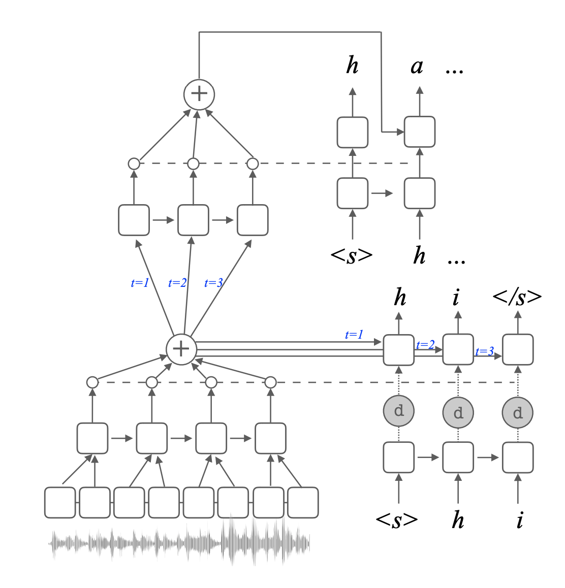

I did not attend ACL 2019 in Florence, Italy. I did, however, go through several videos (all the videos of oral presentations are available here), and here are some notes from the ones I found interesting or relevant to my research. My comments are in red italic. Since I work on speech recognition, most of the work related to NLP tasks is not relevant to me, so this post is definitely biased that way. Here are the broad categories:
End-to-end speech translation
1. Exploring Phoneme-Level Speech Representations for End-to-End Speech Translation
Elizabeth Salesky, Matthias Sperber, Alan W Black
- The task is end-to-end speech translation, i.e., given speech in one language, say Spanish, get translated text in a different language, say English.
- The problem is that the feature sequence is usually too long, e.g. a few thousand frames. Traditionally, like in the LAS model, a pyramidal encoder is used.
- Can we use linguistic information? Yes!
- Divide input sequence into segments corresponding to phoneme boundaries and then average these segments. Advantages: better BLEU score + shorter input.
- How to get the phoneme boundaries? Use an ASR system (need not be very good, or even from the same language, since we just need boundaries).
- Results: Gives consistent improvements in both low-resource and high-resource situations. But this is still not as good as a cascaded speech translation system (i.e. ASR+MT).
- May be interesting to see if this method works for end-to-end ASR systems in general.
2. Attention-Passing Models for Robust and Data-Efficient End-to-End Speech Translation
Matthias Sperber, Graham Neubig, Jan Niehues, Alex Waibel
- Lots of ASR and MT parallel data are available, but not so much for speech translation, so using a “direct model” may not be ideal.
- Auxiliary data can be incorporated, e.g., by using an encoder from an ASR system and decoder from an MT system. But this results in poor data efficiency.
- Two-stage model: similar to cascaded model but trained in end-to-end manner. So error propagation is an issue.
- Proposed: attention-passing model. Idea: instead of passing hidden decoder state, pass the attention context vector.
- Results: better than other models, and does not reduce much even if end-to-end data is reduced.

Language modeling
3. Interpolated Spectral N-gram Language Models
Ariadna Quattoni, Xavier Carreras
- Revisit spectral learning with 2 novelties: (i) capture long range dependencies and (ii) matching task evaluation metric with RNNs.
- Wait, but what is spectral learning? A method to learn the underlying weighted automata that generated any given set of sequences.
- How is it used in LM?
- Create the Hankel matrix from the training set.
- Compute SVD of this matrix $H = P\cdot S$. (computational bottleneck)
- Recover WA: $ A_{\sigma} = P^+ H_{\sigma} S^+$.
- How to capture long-range dependencies? Use bigger n-grams. But this would explode the Hankel matrix! Solution: the basis selection algorithm in this paper (from the same group).
- But this is still worse than vanilla RNN. Issue: mismatch between training loss (L2 loss over Hankel reconstruction) and evaluation metric! RNNs optimize conditional cross-entropy which matches perplexity.
- Solution: train interpolation weights using a log-linear model:
$$ g\left(x_{1 : n}, \sigma\right)=\exp \left[ \sum_{j=0}^{n-1} w_{\sigma, j} \log f\left(x_{n-j : n} \cdot \sigma\right) \right] $$
- Currently in ASR systems, RNNLM rescoring is done since neural LMs are difficult to incorporate in the WFST-based system directly. Perhaps spectral n-gram models in the decoder can avoid the need for rescoring?
4. What Kind of Language Is Hard to Language-Model?
Sebastian J. Mielke, Ryan Cotterell, Kyle Gorman, Brian Roark, Jason Eisner
- What factors in a language make it harder to model?
- Wait, but first, what is difficulty?
- Surprisal, i.e. negative log probability of the string.
- But this is not fair - we are comparing sentences with different contents/style/topic. So we need to work on parallel sentences.
- Work on 69 languages from 13 language families.
- Two rules:
- Open vocabulary - because using UNKs is cheating.
- Total bits as score; no normalization per word or character.
- How to aggregate scores across the whole set?
- Just take average. Problem: in missing data cases.
- “Mixed effects model”: $y_{2,de} \sim n_2\cdot \exp d_{de}$, where $y_{2,de}$ is the score for string 2 on German, $n_2$ is the average score of string 2 for all languages, and $d_{de}$ is the average score of German for all strings. Any probabilistic model can be used for this, but MAP works well enough.
- BPE-RNNLM model used. How many merges is optimum? Answer: language-dependent. But 40% (average optimum across the board) turns out to works well enough.
- What correlates with difficulty? Several factors (morphology, subject/verb order, average dependency length) tried, but no visible correlation.
- Very simple heuristics are predictive. E.g. raw sequence length predicts char-RNNLM difficulty, raw vocabulary size predicts BPE-RNNLM difficulty.
- Translationese is not any easier than the native language.
Analysis of attention models
5. Is Attention Interpretable?
Sofia Serrano, Noah A. Smith
- Usually in an attention-based classifier, we take the attention weights to find which words were considered important by the classifier to predict the output. What can go wrong here?
- Overemphasizes influence of few representations
- Worse than other orderings of importance
- Not necessarily where decision was made
- Interpretability: How well do attention weights represent the importance of inputs given to attention layer for the model output?
- Where does this problem come from? Disconnect between attention weights criteria and model output criteria.
- Method: zero out attention weights from highest to lowest, and renormalize. Do this until decision changes. Compute % of attention weights zeroed.
- Model: Single-layer bidirectional GRU with attention, followed by linear classifier.
- Result: >90% need to be zeroed before decision changes!
- What about random order of zeroing? Almost 100% need to be zeroed, so attention is actually doing something.
- Alternative orderings: (i) by gradient of decision function, (ii) gradient weighted by attention weight magnitude.
- Result: <50% need to be zeroed.
- Effect of encoder structure: For CNN encoder, and no encoder (word embedding fed directly into attention layer), % of weights required to be zeroed is much lower (< 25% even for max-to-min ordering).
- This last result is not out of the blue. RNN encoders tie the input representations to the attention layer more strongly, so zeroing out one weight would have lower impact.
6. Analyzing Multi-Head Self-Attention: Specialized Heads do the Heavy Lifting, the Rest can be Pruned
Elena Voita, David Talbot, Fedor Moiseev, Rico Sennrich, Ivan Titov
- How important are different attention heads in a multi-head self-attention model? What are their individual roles?
- Task: MT. Method:
- Layer-wise relevance propagation. Head relevance is sum of relevance of neurons, where relevance is the attention weight
- Confidence: maximum attention weight of an attention head.
- Result: only a few heads are more important in terms of relevance and confidence.
- Roles of heads? 1. Syntactic 2. Positional 3. Rare tokens
- Syntactic heads are present in most languages.
- In > 50% cases, at least one head gives maximum attention to least frequent (rare) tokens.
- How to prune heads which are not important? While concatenating attention heads, multiply them by a scalar gate. Ideally, we would like to have L0-regularization on these, but it is not differentiable. Solution: use a stochastic approximation.
- Even on pruning to 25% of original number, the roles are still alive.
- Problem: can prune to small number, but cannot start from this configuration.
In particular, I find the work on spectral learning for LMs very interesting and I hope to discuss it in more detail in upcoming blogs. Several of the papers analyzing attention models may be relevant for people working in end-to-end ASR models as well.